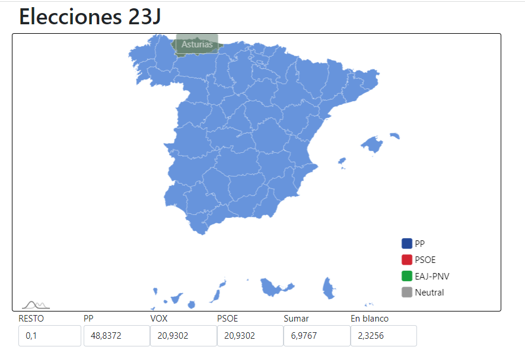

Interactable Election Map
With this project I learn not only how to manage election data using R and JavaScript but also how to create an interectable Map with external libraries like D3.JS.
Go to RepositorieAs a student on Valencia University and during my Internship at
Capgemini, I have acquired skills in
web and mobile programming, which have allowed me to create and develop multimedia solutions
using programming languages such as HTML, CSS, JavaScript, TypeScript and Java, Python, C++,
C#...
Additionally, I have learned to use popular frameworks and libraries like React,
Angular, Swing, Three and Bootstrap.
On my journey I have also learned how to create VideoGames,
animations and simulations using software like Blender, Unity,Unreal.
During my time at the university I have been able to learn how to design games like Magic Card Kingdom. And during my free time I have participated in GameJams
Check them out!Using Android Studio and Kotlin/Java, I have developed various mobile applications with database integration. One notable project is a video game review app that allows users from different devices to leave reviews on any video game. This app utilizes the IGDB API from Amazon/Twitch for game information and an API I created to facilitate user creation and review posting.
Using Blender, Unity and Java processing I have been able to learn how to simulate real world physics like the ones in the video. I also learn to animate using PBD, body tracker, keyframes and much more.
It consists of a web application that allows Doctors to visualize their pattient heart using a vtk to see the data to know if the pattien is going to have and arrhythmia or not.
The application reads from the output of a multiSim and show the result with a table and a chart so the doctor can easily read it.
The Web app is made using Trame, a library made by Kitware the developers behind VTK. It also uses plylib and Vega for the charts.
With this project I learn not only how to manage election data using R and JavaScript but also how to create an interectable Map with external libraries like D3.JS.
Go to RepositorieOn this project I learn I used Blender to create a 3D animation of moons gravitating a planet that was used for a video that was added to an hologram like moon with with shader to make it look realistic.
Go to RepositorieOn this project I learn how to create a React App that uses the Giphy API to search for gifs using TypeScript and CSS. This was extremely useful for my internship at Capgemini.
Go to Repositorie